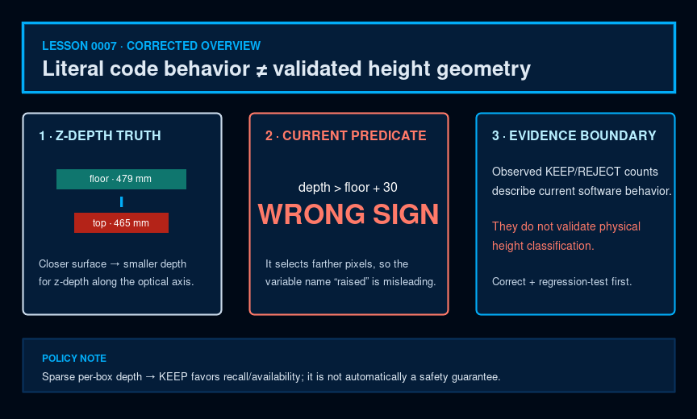

Software · AI · Robotics / Learning system
Lesson 0007 — Depth and geometry filtering
Depth is a second check for a proposed detection. Learn the actual statistics, thresholds, decision branches, and limits of the M4c1 geometry filter.
How to use this lesson
Read the explanation, inspect the visual, make a prediction, and then compare it with the repository evidence. The goal is a model of this project that you can explain—not a list of framework slogans.

The question this lesson answers
How can depth provide a second check for a cube-like object without replacing YOLO? The current geometry filter treats a decoded RGB detection as a hypothesis, estimates a local reference depth, selects pixels using the implemented numeric predicate, measures that subset's shape, and returns KEEP or REJECT with a reason.
Mental model
YOLO proposes; depth checks the proposal. If YOLO proposes nothing, the geometry filter has no box to inspect. If per-box depth is too sparse, the current code favors recall/availability by keeping the candidate with a low-quality reason. That is a policy choice, not automatically a safety guarantee.
1. Start with a candidate, not with a color mask
compute_geometry() receives a depth image, integer box coordinates, and runtime parameters. It does not scan the entire frame for cubes. This preserves the project's YOLOv5-first approach and makes the geometry branch a post-filter for candidate boxes.
The filter is evidence fusion for a proposed box, not an independent object detector.
2. Coordinate alignment is an assumption worth checking
The filter indexes depth_mm[y, x] using the RGB detection box coordinates. M4c1 treated the depth stream as color-registered for this purpose. If RGB and depth are not aligned, a correct 2D box can sample the wrong physical surface. The current code does not perform a separate registration transform inside geometry_filter.py; the camera topic contract must therefore be verified on hardware.
3. Units and invalid values
The helper expects a two-dimensional uint16 array in millimetres. It ignores zeros and values at or above max_depth_mm=4000. The node's callback checks the type and shape before calling the helper. A unit mistake—metres treated as millimetres, or RGB values treated as depth—would make every threshold meaningless.
4. Estimate the local floor with an annulus
For a box, the helper trims an inner box by inset_px=1 and builds an outer ring with annulus_outer_px=15. It removes the box area from that ring and takes the median of valid annulus pixels as floor_mm. The median is intended to be robust to a few invalid pixels or small texture changes, but the M4c report warns that a tilted-down camera can make the annulus measure floor slope rather than true object height.
Interactive: step through one box
1 · Use the surrounding annulus, not the object interior, to estimate a local reference depth.
5. The primary test currently has a reversed physical sign
For every valid in-box depth value, the helper selects values numerically greater than floor_mm + raised_mm. With raised_mm=30, at least min_raised_frac=0.20 must satisfy that literal predicate or decide() reports flat. Call this the selected fraction when reasoning about current behavior; the variable name raised_frac overstates what it measures.
Confirmed defect, not an unresolved convention
ROS depth images encode distance along the optical z-axis. A cube top closer to the camera has a smaller depth than the surrounding floor, as the project's own example also shows (465 mm top versus 479 mm floor). Therefore depth > floor_mm + 30 selects points farther from the camera, not a raised top. Until production code is corrected and regression-tested, KEEP/REJECT results must be described as observed behavior of this predicate—not validated height classification. [ROS depth convention · implemented predicate]
6. The selected subset gets a 3D extent
When more than five selected pixels exist, the helper reconstructs a small point set from pixel coordinates and depth. With camera intrinsics fx and fy, it estimates horizontal and vertical world extents, plus the observed depth range. The ratio is computed from the sorted extents as long/short. This is a rough geometric test, not a full point-cloud reconstruction, and it inherits the sign defect in the selection step.
7. Aspect ratio rejects long thin selected subsets
The current default is max_ratio=1.2. If the selected subset's long/short ratio exceeds that value, decide() returns a reason beginning aspect:. M4c1's green-bag run produced a ratio around 1.45–1.5 and was rejected. A ratio nearer 1.0 is more square, but because selection is currently reversed, this statistic is not validated cube geometry.
8. Depth spread rejects irregular selected subsets
The helper measures the standard deviation of the selected subset's depth. The default max_planar_top_stddev_mm=30 rejects a high-spread subset with a no_planar_top: reason. The green bag's reported spread was about 86 mm. A real planar top should have low spread after correct selection, but the current statistic is evidence about the implemented subset—not proof of an object's identity.
9. The decision function has an intentional fail-open branch
decide() first returns KEEP with a no_depth_stats reason when statistics are unavailable, and keeps a candidate with low_depth_quality when n_valid < n_min (default 30). With sufficient valid depth, it applies flat, aspect, and planar-top checks. This improves recall and availability under weak per-box depth, but may pass a false positive; whether that is safe depends on what consumes the detection.
The current implementation distinguishes “not enough evidence” from “evidence says reject.”
10. What M4c1 actually demonstrated
| Object/evidence set | Observed filter result | What can be said |
|---|---|---|
| Blue cardboard tissue box | 0/30 kept | all recorded candidates removed; physical reason not validated |
| Blue cardboard package | 0/61 kept | all recorded candidates removed; physical reason not validated |
| Blue decal | 0/31 kept | all recorded candidates removed; physical reason not validated |
| Green raised Uber Eats bag | 0/64 kept | all recorded candidates removed under aspect/spread decisions |
| Real blue cube | 22/29 kept | partial preservation; below 90% target |
| Real red cube | 0/30 kept | recorded tight top-face candidates were not preserved |
11. A new failure mode prevents overclaiming
M4c1 also recorded a gray folded cloth that received green_cube candidates around confidence 0.40. Because the cloth was folded and had depth variation, geometry did not reject it. The report notes that the production confidence threshold of 0.50 removes this particular case. One filter can solve one failure mode and leave another; evidence should be scoped that way.
12. M5 live consequence
In the live empty run, 439 output messages contained zero kept detections; cumulative diagnostics also recorded 991 flat rejects and one aspect reject. This demonstrates the observed empty-scene outcome, not physically correct floor-height reasoning, because the selection sign is wrong. In the cubes-in-frame M5c2 run, the recorded candidates did not yield usable red/blue cube boxes at the operating threshold. Geometry cannot create a missing candidate, but the evidence does not isolate the model as the only possible cause.
13. Check your understanding
Why is the annulus outside the box?
Why can a real cube still be rejected?
What is the key limit of geometry filtering?
14. Tiny read-only exercise
Run the pure decision function against a synthetic “all floor” summary. This does not touch hardware:
.venv-m2/bin/python -c "from recognition_of_different_colored_cubes.geometry_filter import decide; p={'n_min':30,'min_raised_frac':0.2,'max_ratio':1.2,'max_planar_top_stddev_mm':30}; s={'valid':True,'n_valid':100,'raised_frac':0.0,'ratio_long_over_short':1.0,'planar_top_stddev_mm':10}; print(decide(s,p))"Observable result: ('REJECT', 'flat:raised_frac=0.000<0.2'). Then read geometry_filter.py and locate the same decision order.
15. Explain it back
Explain this without reading: “What does the filter literally compute, why is its depth sign physically reversed, and why does a missing YOLO candidate stop the geometry branch?”
Use: annulus, reference median, selected fraction, 3D extent, aspect, planar top, fail-open.
What this lesson intentionally postpones
This lesson intentionally postpones camera calibration theory, full RGB/depth registration mathematics, point-cloud reconstruction, and threshold re-tuning. It teaches the implemented filter and its measured boundary first.
Primary references and next lesson
- ROS REP-118: Depth Images — depth units, invalid values, and the optical-axis distance convention.
- OpenCV camera-calibration model — the pinhole projection used when turning pixels and depth into metric extents.
- Project README and the linked canonical documentation.
- Curriculum plan — scope, teaching contract, and project truth.
- Lesson 0008 — Evaluation and Fine-Tuning: design the evidence loop for improving the positive-detection gap.